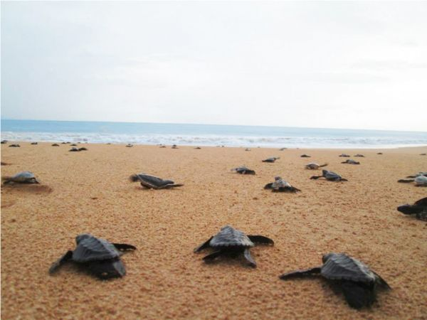
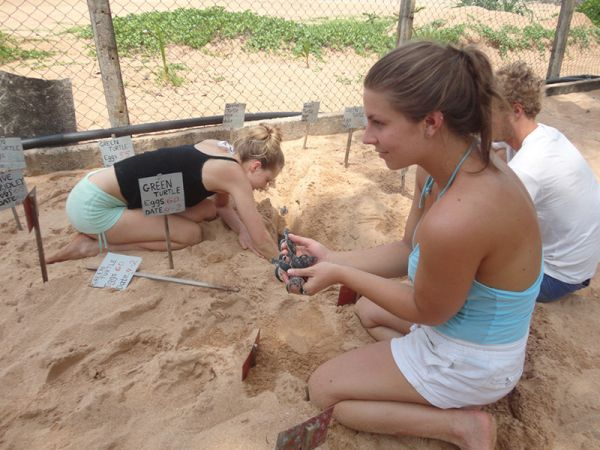
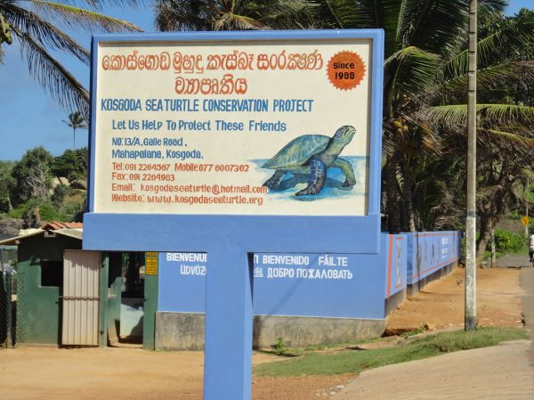
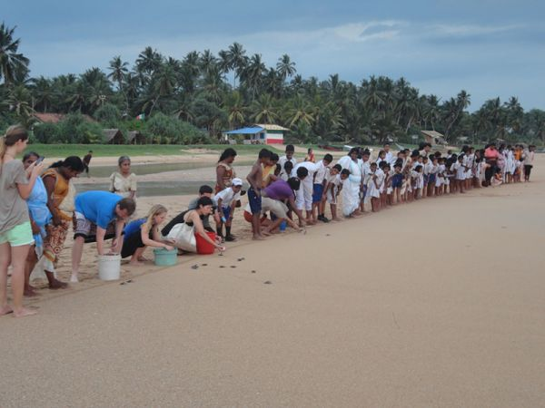
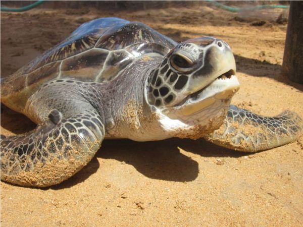
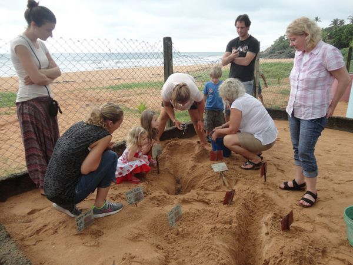
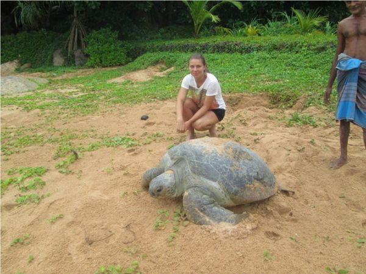
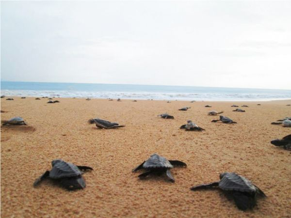
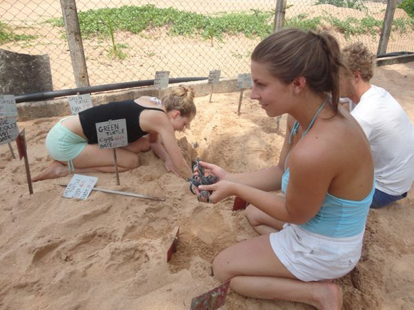
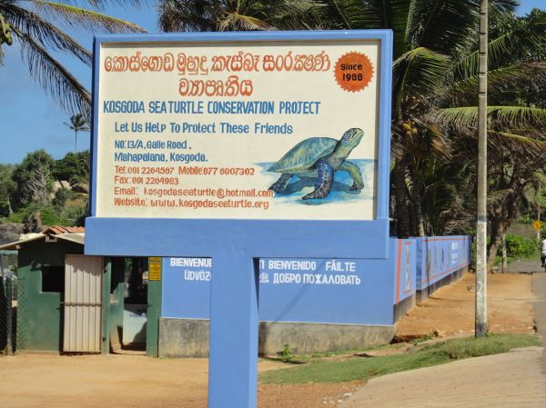
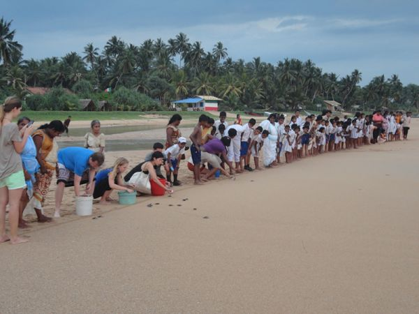
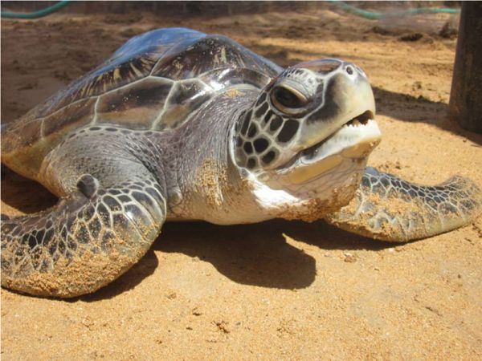
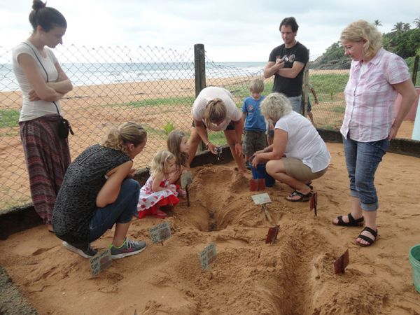
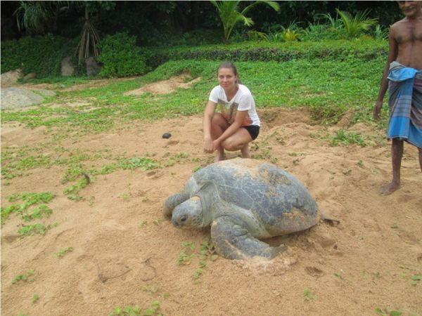
In 1978, Dr. Upen de Silva and Dr. R. S. B Wickremsinghe established the first Turtle Hatchery in Sri Lanka. Since then, Kosgoda hatchery has been committed to promoting environmental conservation and making it simpler to adopt eco-friendly practices.
Thier primary objective is to safeguard and preserve Sri Lanka's wildlife and its habitats, with a particular focus on endangered species. They strive to ensure a sustainable future by actively leading, facilitating, and inspiring individuals to take
responsibility for protecting, conserving, and improving the environment, including the preservation of national habitats, flora, fauna, and biodiversity.
Their aim is to motivate people to engage in conservation efforts in various ways, thereby safeguarding the natural environment for generations to come.
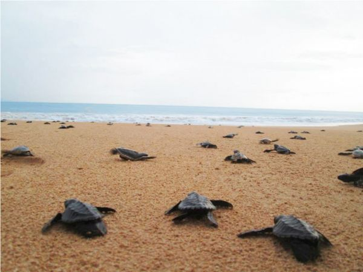
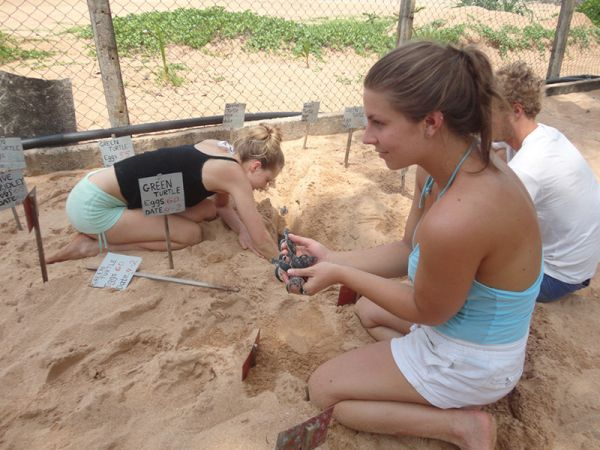
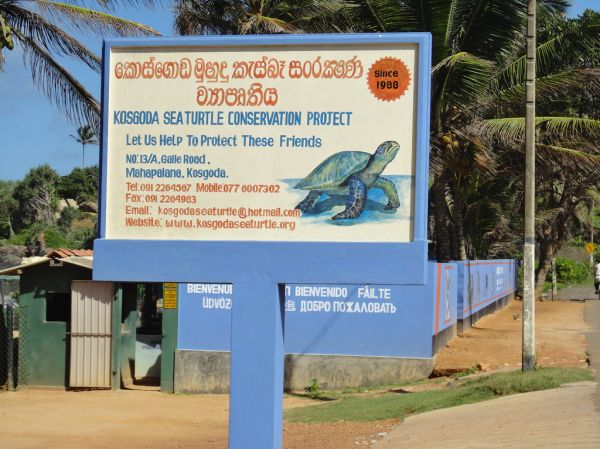
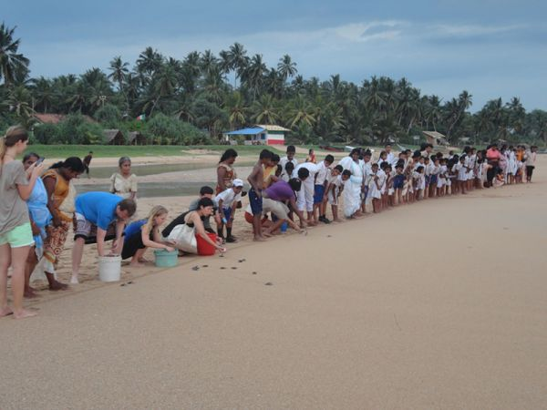
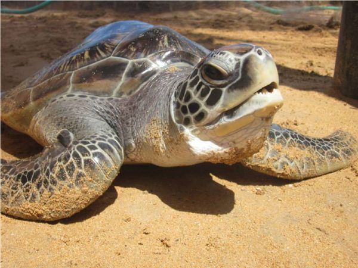
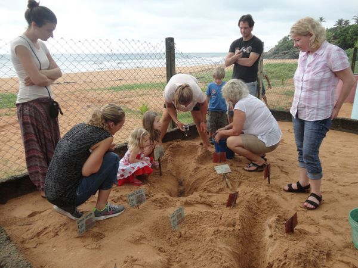
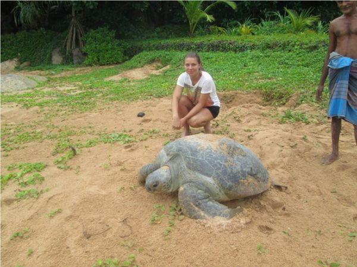
Preserving the nesting grounds of turtles is essential for their successful reproduction. This involves important actions such as maintaining clean beaches and planting vegetation to provide shelter. When it comes to places to work, there have certainly been more challenging environments!
By participating in the project, not only will you acquire knowledge about turtles, but you will also have the opportunity to share it with others. Volunteers can engage in leading tours and sharing their newfound knowledge with both locals and tourists. Raising awareness and providing education about these captivating creatures and the threats they encounter are vital for their protection.

Night patrols offer a unique and unforgettable experience. By patrolling the beach, not only do you discourage poachers, but you also have the chance to witness the awe-inspiring sight of a female turtle nesting. These nocturnal activities are crucial moments for turtles, as they lay their eggs and face various threats from predators and poachers. The visible tracks leading to the nesting sites serve as reminders of their vulnerability.
Turtle eggs collected from beach nests or acquired to prevent illegal trade are reburied in the hatchery for safe incubation. Most hatchlings are released at night for better survival, while some are kept longer for 'headstarting' to strengthen them. The hatchery provides a crucial sanctuary for turtle eggs, ensuring their protection and increasing their chances of thriving.
It's a unique opportunity to interact with these friendly marine reptiles up close while also learning how
you can help protect these wonderful creatures for present and future generations to enjoy.
You might have the opportunity to see young turtles hatching from their eggs depending on the time of your visit. Watching them break out of their shells and head for the ocean is an amazing sight.
Volunteer assistance is frequently needed in hatcheries for tasks like tank cleaning, feeding, and turtle release. A fantastic way to get involved and aid the hatchery's efforts is to volunteer.
You might be able to assist in the release of baby turtles into the ocean if you're lucky enough to visit during a release event. The conservation efforts of the hatchery can be helped by participating in this truly unforgettable experience.